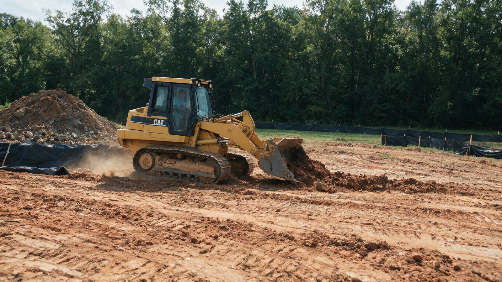

Clearing briars and thickets without burning starts with a simple decision: what should the ground be like when the work is done? Choosing the right mechanical method—from hand cutting near fences to brush clearing in Charlotte, NC with a tracked drum mulcher—eliminates thorny debris in place without smoke, burn permits, or haul-off.
- Brush density: Light saplings vs. thick briars and vines.
- Trees over 8″ thick: How many larger trees need removal.
- Slope & terrain: Flat ground vs. steep banks or gullies.
- Rocks & obstacles: Surface rock, tight access, or structures to work around.
Key Takeaways
- Identify the plants and mark what should stay. Blackberry, greenbrier, and multiflora rose need not all be treated the same way, and useful plants should not be cleared by default.
- Match tools to access and terrain. Hand work offers control in tight spaces; machinery suits dense, accessible growth when the ground can support it.
- Open a safe route before cutting deeper. A clear entrance reduces the need to push through tangled canes and gives people or equipment a way in and out.
- Choose debris handling before work begins. Mulching, chipping, or removal can keep sharp brush out of burn piles and away from paths and drainage routes.
- Plan for follow-up. Cutting can leave roots and crowns that produce new shoots, so inspect the patch and manage regrowth as it appears.
- Set the finish with the next use in mind. A path, planting area, and mowable space each need a different surface and amount of remaining mulch.
- Want a pre-work checklist? Use our lot-clearing tips to organize site conditions and the intended finish.
Survey the thicket and decide what should stay
Start by identifying the growth instead of treating every thorny plant as one generic briar patch. Blackberry has arching, prickly canes; greenbrier often climbs with tendrils; multiflora rose forms arching thorny canes, and distinguishing them helps you avoid removing useful native shrubs or overlooking plants that need targeted control.
Walk the edges and interior, then mark keeper trees, native shrubs, garden borders, and wildlife cover before any cutting begins. In the Charlotte-area Piedmont, a thicket on red clay or a sloped ridge can also hide wire, discarded material, wet ground, and abrupt ditches, so note hazards and access limits before deciding where workers or machines can travel.
Set the finish first: a walkable path, mowable ground, a planting area, or a broader opening all call for different amounts of vegetation and woody material to be removed. Here is a look at the kind of overgrown ground that may need assessment before clearing.
Choose tools that fit the patch and the ground
For a small, reachable patch, loppers or a pruning saw let you take woody canes one at a time, while a digging tool can remove accessible root crowns. This is the most controlled approach near garden plants, fences, and narrow property edges, but hand cutting alone can leave established roots ready to resprout.
A brush cutter can handle manageable stems and vines when you work from a cleared edge and keep other people well outside the cutting zone. It cuts top growth, not the roots, so plan for follow-up rather than expecting one pass to stop the patch from returning.
Brush hogging suits open ground where the machine can travel safely and turn without hitting obstacles. Steep slopes, soft soil, fences, ditches, and hidden debris can make it unsuitable, while dense brush and small woody growth may be better suited to on-site mulching.
When a mulch finish fits the plan, Forestry Mulching in Charlotte, NC processes overgrown brush and small trees in one pass, spreading the shredded material across the ground. Typical regional projects range from $2,000 to $8,000 per acre depending on brush density and terrain, and this approach is useful when you want to clear dense growth without creating a brush pile to burn or haul away.
With forestry mulching, roots remain in the ground while the shredded material forms an in-place ground cover. On Carolina red clay, that erosion-resistant mulch bed can help protect soil, while the right equipment and method still depend on the slope, access, and intended finish.
When managing larger unwanted woody stems without open burning, forestry extension guidelines from Ohio State University Extension note that mechanical girdling uses two parallel horizontal cuts 2 to 4 inches apart around the trunk to interrupt cambium flow where felling or mulching is not desired.
Work from an access route and protect what remains
For clearing briars and thickets without burning, use a controlled sequence instead of charging into the densest growth. Open a narrow route from a safe access point first, then work outward in manageable sections so people and machinery can move without forcing through tangled canes.
Wear eye protection, sturdy gloves, long sleeves, durable trousers, and boots. Before cutting or driving equipment into dense underbrush, look for wire, bottles, rocks, and other hazards that can injure workers or damage equipment.
Keep cut canes from snagging people or machinery as you work, and avoid dragging tangled vines across fences or against the trunks of keeper trees. Where mature trees must remain, protect trunks and root zones from cutting and equipment traffic rather than treating them as obstacles to work around at the last minute.
To open space while retaining selected trees, Selective Clearing & Tree Preservation in Charlotte, NC protects chosen trees, including their trunks and root zones, as it makes room for a project. Agreeing on keeper trees before work helps set clear boundaries for the clearing before equipment enters the work area.
Handle thorny debris without a burn pile
Mulch or chip woody material on site when equipment can process it safely and the ground-cover finish suits the area’s next use. Grinding dense briars to ground level can leave a walkable mulch layer in place, keeping sharp canes out of a burn pile and avoiding haul-off for suitable mulching work.
Keep seed-bearing material and pieces that could take root separate from material meant to be spread. Contain or remove suspect debris instead of carrying it across the property, and keep any temporary piles clear of paths, fences, drainage routes, and plants you want to retain.
For a walkable, mulched finish, the Briar & Thicket Clearing in Charlotte, NC service grinds dense briar patches and thorny thickets to ground level, leaving a clean, walkable mulch layer in place. This mechanical approach provides a clean, burn-free debris option when an on-site mulch finish suits your property.
Avoid spreading mulch over desired groundcover or piling it against plants you want to keep. Check the finished surface for sharp canes and uneven spots, especially where people will walk or where water needs a clear route.
Plan follow-up around the kind of regrowth
Cut stems can resprout when established roots or root crowns remain. Remove accessible crowns when practical, then revisit the area and cut or pull new shoots while they are still easy to reach and before they tangle together again.
Watch for seedlings separately from shoots coming back from roots. Removing young plants before they establish, and keeping seed-bearing debris out of the cleared area, helps prevent a fresh generation from taking hold.
For persistent woody plants, repeated mechanical cutting or mowing during the growing season gradually exhausts stored root reserves. Plan repeat visits around what actually returns and how quickly it grows, cutting new shoots before they harden into woody canes.
Make follow-up part of the plan, not an afterthought. A small, regular cleanup is easier to manage than waiting until the thicket closes over again, especially where you need to keep a path or property edge open.
Prepare the cleared ground for its next use
For a path or access lane, leave a walkable surface and check that mulch or cut material does not block drainage or create a trip hazard. For a planting area or lawn, remove excess woody debris and establish suitable ground cover instead of leaving broad patches of bare soil exposed to erosion and weeds.
Selected native shrubs and groundcover can provide habitat and soil cover, so retain useful plants where they fit the plan. Keep them clear of paths, structures, and spaces that need regular access, then inspect the work after rain and after the first flush of new growth.
Correct drainage problems and small patches of regrowth while they are still easy to reach. Clearing briars and thickets without burning works best when the mulch layer, retained plants, and follow-up all support the way you intend to use the ground.
When thickets and briars have crept into grazing paddocks or hay ground, see our guide on reclaiming overgrown pasture in North Carolina for how to transition mulched ground back into grass.
Frequently Asked Questions
Can blackberry canes go in a home compost pile?
They can, but thick canes break down slowly and make a pile harder to turn, so chop them into short pieces first. Keep ripe berries and root crowns out of a cool home pile because those parts can remain viable if the compost does not heat evenly.
Is winter a good time to clear a briar patch?
Winter can make the woody framework of blackberry and multiflora rose easier to see after leaves drop, which helps with selective work around trees and shrubs. Greenbrier can remain visible among dormant vegetation, so identify plants carefully.
Will landscape fabric or a thick layer of mulch stop established briars from returning?
Neither reliably kills an established root system: shoots can emerge through fabric seams or around its edges, and thick mulch may suppress seedlings without eliminating mature crowns. Use ground cover as part of site preparation, then remove returning shoots before they rebuild a dense canopy.
How deep should I dig to remove a blackberry root crown?
There is no single depth that fits every plant because crowns and attached roots vary with age and soil conditions. Loosen the soil around the crown, remove the central woody base and as many connected roots as practical, then check the spot for new shoots.
Can I use a riding mower to clear a dense briar patch?
A household riding mower is meant for maintained grass, not tangled woody canes that can wrap around moving parts or hide rocks and wire. Use equipment designed for brush only after checking the terrain and clearing hazards from its route.
Will goats permanently clear a blackberry thicket?
Goats can browse thorny growth, but repeated grazing does not guarantee that established roots and crowns are gone. They may also eat desired shrubs, so fencing and plant protection need to be part of any grazing plan.
Conclusion
Clearing briars and thickets without burning takes more than cutting the visible canes: identify what is growing, mark what should stay, choose tools for the terrain, and manage debris so the cleared space remains safe and useful. Plan for regrowth and a suitable ground cover, and the first pass becomes the start of a maintainable property rather than a short-lived opening.
Every tract of land in the Carolina Piedmont is unique. At Land Clearing Charlotte, we will walk your property lines, inspect soil and undergrowth density, and give you an honest, transparent estimate with zero obligation.